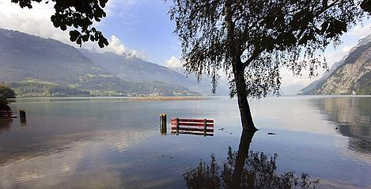

Gouverner, ce sera prévoir le climatPar Etienne Dubuis vendredi 28 août 2009 Certains secteurs d’activité seront tant affectés par le réchauffement climatique que l’expérience risque d’y être moins utile que la capacité d’anticiper. Une idée au cœur de la Conférence mondiale sur le climat, qui s’ouvre lundi à Genève. |
|
|  |
«Le réchauffement climatique va profondément changer la prise de décisions dans un certain nombre de domaines», a assuré mercredi le secrétaire général de l’Organisation météorologique mondiale (OMM), Michel Jarraud, en présentant à la presse la troisième Conférence mondiale sur le climat qui se tient la semaine prochaine à Genève. «De l’agriculture à la santé en passant par l’énergie et l’aménagement du territoire, le phénomène transformera assez profondément la donne pour que toutes sortes d’habitudes deviennent inadéquates. Ce qui signifie qu’il ne nous sera plus possible de nous fier autant qu’avant à notre expérience du passé pour prendre certaines résolutions ou décider de certains investissements. Et que nous devrons, dans nombre de circonstances, nous baser plutôt sur des prévisions. Il s’agit là d’un changement complet de paradigme.» Bigre! L’OMM a le vent en poupe. Vouée à l’origine à un rôle obscur, celui de faciliter la standardisation et l’échange des mesures météorologiques, cette organisation a acquis une très forte audience ces dernières décennies à la faveur du réchauffement climatique. Très tôt alertée du phénomène, elle a réagi en prenant quelques initiatives d’envergure. En organisant tout particulièrement deux Conférences mondiales sur le climat à l’impact décisif. La première, en 1979, a lancé un effort planétaire de collaboration scientifique, qui a conduit à la création du Groupe d’experts intergouvernemental sur l’évolution du climat (GIEC) et permis une meilleure connaissance du phénomène. La seconde, en 1990, a posé les bases d’une réponse politique au problème, en préconisant l’élaboration d’une Convention-cadre des Nations unies sur les changements climatiques. Un document essentiel puisque, depuis son adoption en 1992, ses Etats signataires se réunissent chaque année pour préciser les obligations des uns et des autres, en matière de réduction des émissions de gaz à effet de serre notamment. Avec des avancées importantes comme à Kyoto, en 1997, et peut-être à Copenhague, en décembre prochain. En cette fin d’été, l’OMM souhaite ouvrir un troisième grand chantier. Les variations climatiques en général et le réchauffement actuel en particulier étant inévitables, elle se propose de favoriser l’adaptation de l’humanité au bouleversement en cours. Comment? En développant des prévisions climatiques à plusieurs mois et plusieurs années, de manière à donner aux décideurs des secteurs concernés (du petit paysan au dirigeant de multinationale) les moyens de planifier au mieux leurs activités. Pour l’OMM, on le devine facilement, ce serait là un moyen extraordinaire de tirer profit des connaissances accumulées depuis des décennies et de s’assurer un rôle en vue pour longtemps encore. Mais que peuvent apporter ces prévisions à leurs utilisateurs? «Des prévisions à moyen terme sont susceptibles d’améliorer sensiblement la sécurité alimentaire, assure Martin Frick, directeur du Forum humanitaire mondial, à Genève. Etre prévenu plusieurs années à l’avance d’une aggravation de la sécheresse dans une région comme le Sahel permet d’introduire des plantes plus résistantes au manque d’eau ou, dans des cas extrêmes, de déplacer des populations. Même cas de figure dans d’autres secteurs comme la santé, où l’annonce d’une évolution des températures ou des pluies permet d’anticiper l’arrivée de nouvelles maladies.» Il ne s’agit pas là seulement de musique d’avenir. Moult entreprises et pouvoirs publics tiennent d’ores et déjà compte des avertissements des climatologues. «Aux Pays-Bas, de très importants programmes d’élévation de digues ont été lancés afin d’affronter la montée attendue du niveau des mers, poursuit Martin Frick. Et des chaînes américaines de grande distribution n’ouvrent plus de magasins dans certaines régions rurales du sud-ouest des Etats-Unis en prévision des sécheresses auxquelles elles semblent condamnées.» Soit. Mais ne suffit-il pas de savoir qu’un réchauffement climatique est en cours, et de connaître ses principales implications, pour prendre les décisions qui s’imposent? Le monde a-t-il vraiment besoin d’investir des sommes considérables pour affiner les prévisions climatiques déjà disponibles? «Assurément, répond Michel Jarraud. Les décideurs sont toujours confrontés à des situations particulières, et ce sont elles qui les intéressent. Il ne leur sert à rien de savoir que la température va s’élever globalement de 2 ou 3 degrés s’il y a des endroits où elle reste stable et d’autres où elle grimpe en flèche. Ce qu’ils veulent connaître, c’est le sort de leur ville, de leur rivière ou de leur champ. Or, malgré les progrès substantiels réalisés depuis vingt ans, nous sommes encore loin de répondre à des besoins aussi précis. Si nous voulons y arriver un jour, nous devons engager un gros et long effort.» Il reste à savoir si la démarche est réaliste. «Les météorologues maîtrisent les prévisions à quelques jours et les climatologues ont une bonne idée des bouleversements qui attendent le monde dans cent ans, une fois que le réchauffement aura produit ses effets, explique Martin Beniston, professeur de climatologie à Genève. En revanche, il est extrêmement difficile de faire des prévisions intermédiaires, dans une fourchette de six mois à vingt ans. Et nous ne sommes pas près d’en savoir plus.» Ce troisième chantier que l’OMM ouvre ce lundi à Genève n’est pas le moins ambitieux. |